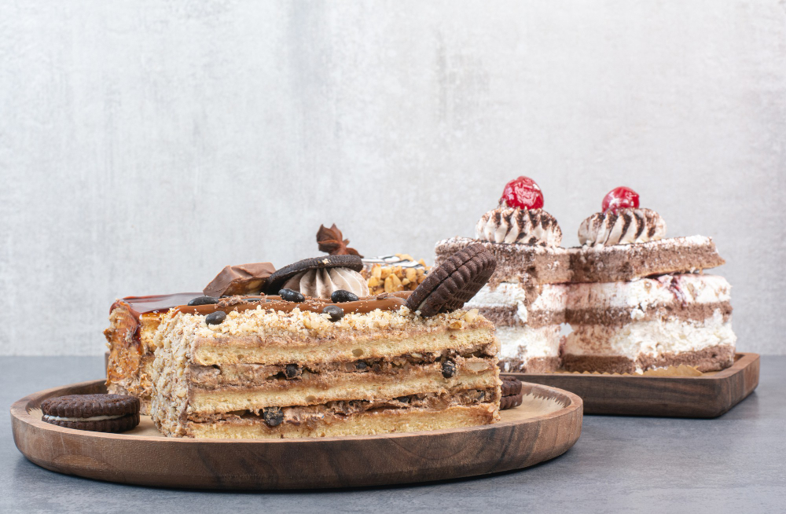
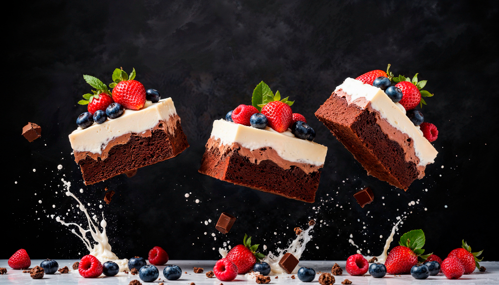
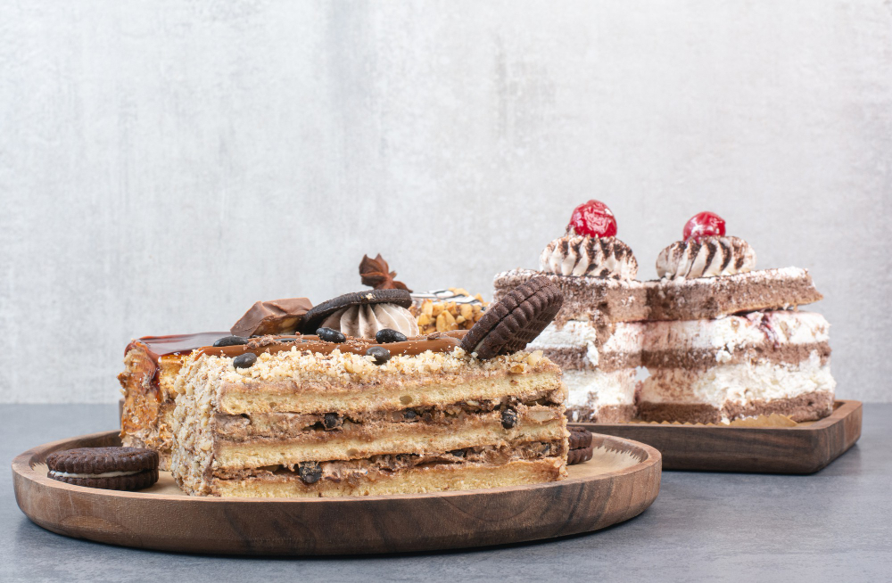
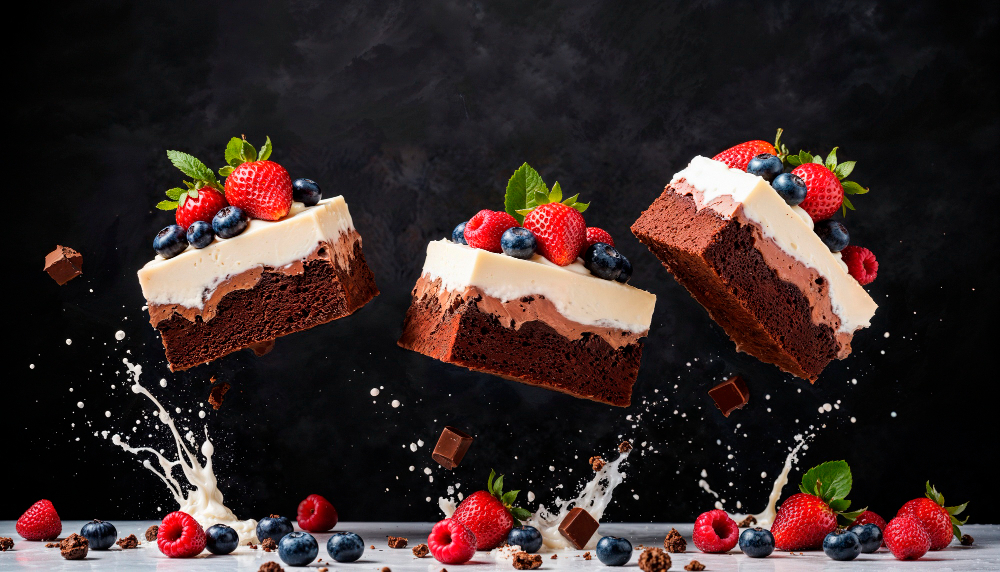

To bake a sweet cake, start by preparing your pan and preheating the oven. Then, cream together butter and sugar, add eggs one at a time, and gradually incorporate dry and wet ingredients. Bake until a toothpick inserted into the center comes out clean. Cool the cake completely before frosting.Cake is a form of sweet food made from flour, sugar, and other ingredients, that is usually baked. In their oldest forms, cakes were modifications of bread, but cakes now cover a wide range of preparations that can be simple or elaborate, and that share features with other desserts such as pastries, meringues, custards, and pies. The most commonly used cake ingredients include flour, sugar, eggs, butter or oil or margarine, a liquid, and leavening agents, such as baking soda or baking powder. Common additional ingredients and flavourings include dried, candied, or fresh fruit, nuts, cocoa, and extracts such as vanilla, with numerous substitutions for the primary ingredients. Cakes can also be filled with fruit preserves, nuts or dessert sauces (like pastry cream), iced with butter cream or other icings, and decorated with marzipan, piped borders, or candied fruit. Cake is often served as a celebratory dish on ceremonial occasions, such as weddings, an niversaries, and birthdays. There are countless cake recipes; some are bread-like, some are rich and elaborate, and many are centuries old. Cake making is no longer a complicated procedure; while at one time considerable labor went into cake making (particularly the whisking of egg foams), baking equipment and directions have been simplified so that even the most amateur of cooks may bake a cake.


 


